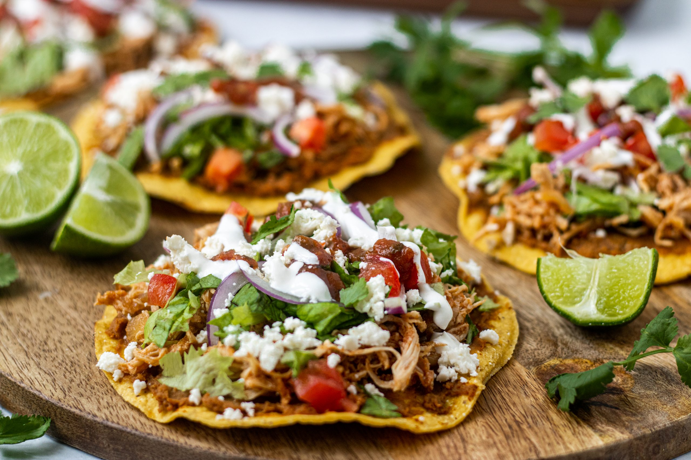

Tinga Tostadas

A Mexican Food Staple
These quick and easy Chicken Tinga Tostadas might just be your new Taco Tuesday recipe! Healthy baked tostada shells are layered with refried beans, shredded chicken, Tinga sauce, and toppings like lettuce, tomatoes, and Cotija cheese. Serve as a fun appetizer or main dish along with your favorite Mexican dishes!
Ingredients
Tostada Shells
- 6 corn tortillas
- 1 1/2 tablespoon of vegetable oil
- 1 tsp of lime juice
- 1/4 tsp salt to taste
Chicken Tinga
- 2 tablespoons of vegetable oil
- 1/2 white onion
- 2 cloves of garlic
- 1-2 chipotles in adobo sauce
- 1 cup diced tomatoes fire roasted
- 1/2 tsp dried oregano
- 1/2 tsp cumin
- 1/2 tsp paprika
- 1/2 tsp salt
- 3 cups of shredded chicken
Toppings
- 1 1/2 cups of refried beans
- 1 1/2 cups of shredded lettuce
- 1 large avocados
- 3/4 cup of diced tomatoes
- 6 tablespoons of cotija cheese - crumbled
Instructions
Tostada Shells
- Preheat oven to 375°F.
- Whisk together oil, lime juice, and salt in a small bowl.
- Brush 1 teaspoon of the mixture over the front and back side of a corn tortilla and then place on a large baking sheet. Make sure all of the tortillas are evenly spaced and do not overlap.
- Bake tortillas in the preheated oven for 12-14 minutes, flipping halfway through.
Chicken Tinga
- Add oil and onion to a medium-sized skillet or saucepan over medium heat. Sauté for 3-4 minutes or until the onion begins to turn translucent.
- Add garlic cloves and continue sautéing for another minute.
- Combine sautéed onion with chipotle peppers, diced tomatoes, oregano, cumin, paprika, and salt in a large cup of a high-speed blender. Blend for 20-30 seconds or until completely smooth.
- Pour the sauce back into the saucepan and bring to a boil. Reduce heat to medium-low and simmer for 10 minutes.
- Stir in shredded chicken and mix until it is completely coated in the sauce.
Tostadas
- Spread ¼ cup of refried beans onto each baked tostada and layer with ½ cup of shredded chicken in Tinga sauce, ¼ cup of shredded lettuce, 2-3 avocado slices, 2 tablespoons of diced tomatoes, and a tablespoon of Cotija cheese.
- Repeat with the remaining tostadas and ingredients. Serve immediately and enjoy!